Introduction to Japan Kimono
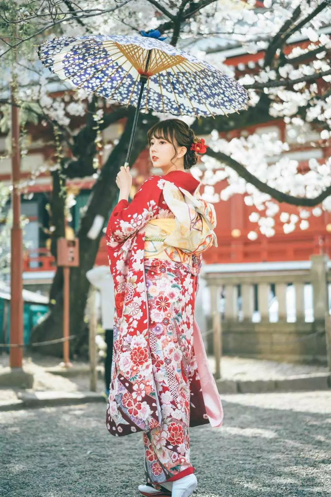 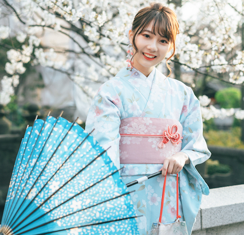 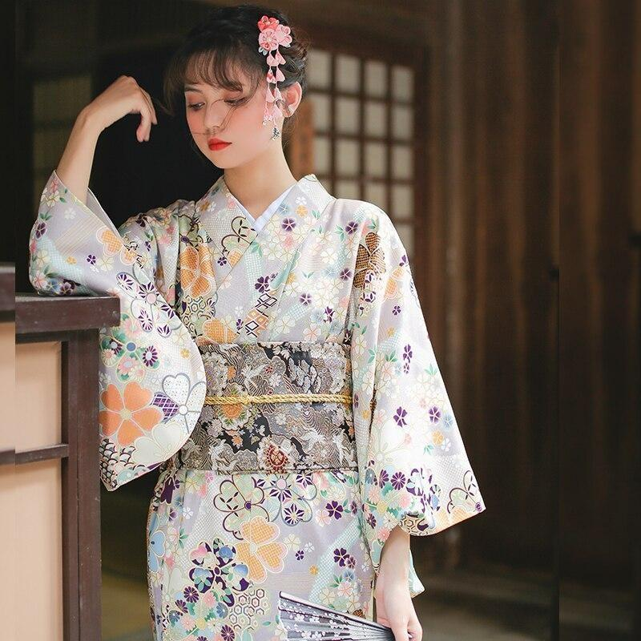
The kimono is a traditional Japanese garment and the national dress of Japan. The kimono is a T-shaped, wrapped-front garment with square sleeves and a rectangular body, and is worn left side wrapped over right, unless the wearer is deceased. The kimono is traditionally worn with a broad sash, called an obi, and is commonly worn with accessories such as zori sandals and tabi socks.
kimono [ "thing to wear" – from the verb "ki" (to wear on the shoulders) , and the noun "mono" (thing) ]
5 Popular Kimono Fabrics and Pattern
1
1
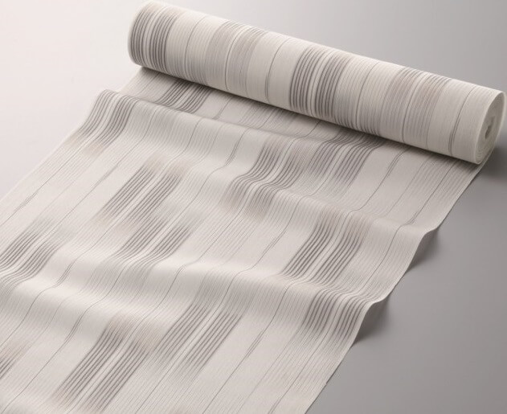
Hon-Shiozawa Silk
The highest grade silks always have the term "hon-" before their name in order to designate them as "real" or "true".
The first popular kimono fabric today is Hon-Shiozawa silk fabric from Minami Uonuma City in Niigata Prefecture along the Sea of Japan coast.
Known for the strength of its weave, as well as for its simple, cross-like patterns, Hon-Shiozawa fabrics are a nation-wide favourite for kimono makers and weares alike.
2
2
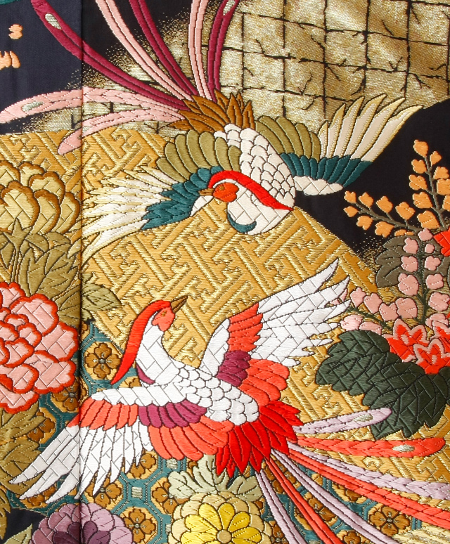
Nishijin-Ori Yarn
Nishijin-ori (Nishijin fabric) is a traditional textile produced in the Nishijin district of Kamigyo-ku in Kyoto, Japan.
Nishijin weaving is known for its highly-decorative and finely-woven designs, created through the use of tedious and specialised production processes. It is well-regarded for the high quality and craftsmanship of the resulting fabrics, commonly used for high-quality obi and kimono.
3
3
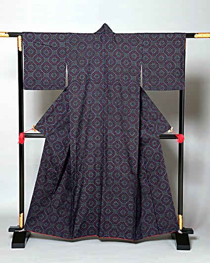
Ushikubi Tsumugi Silk
Ushikubi comes from Ishikawa Prefecture. Ushikubi tsumugi silk is so tough it's got the nickname as the "nail-plling" silkd. That is because it is rumoured to be able to pull
one right out of a wall if hook it on good enough. Ushikubi fabrics are famous for their indigo dyes which give them a timelessly "cool" colour.
4
4
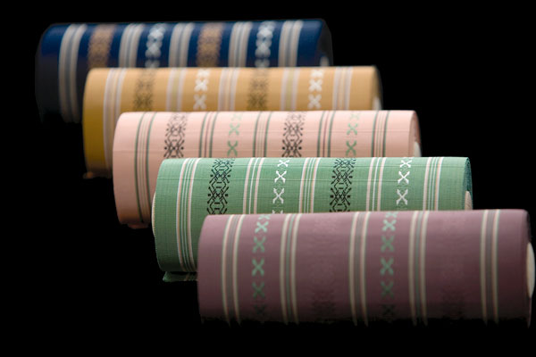
Hakata Brocade
Hakata brocade is a string, stiff, and impressive fabric made in Fukuoka Prefecture. Interestingly, it is tough and cool image mathces the feel of its hometown perfectly.
These strong fabrics are used mainly for the obisasd.
5
5
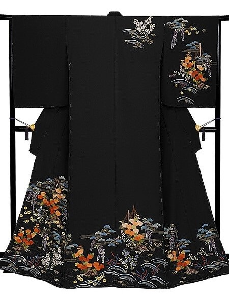
Kaga Embroidery
Kaga Embroidery (Kaga-nui in Japanese) is traditional embroidery produced in the city of Kanazawa, Ishikawa prefecture, using a variety of threads such as colorful silk threads, luxurious gold and silver threads, and lacquered threads.
6 Occasions To Wear A Japanese Kimono
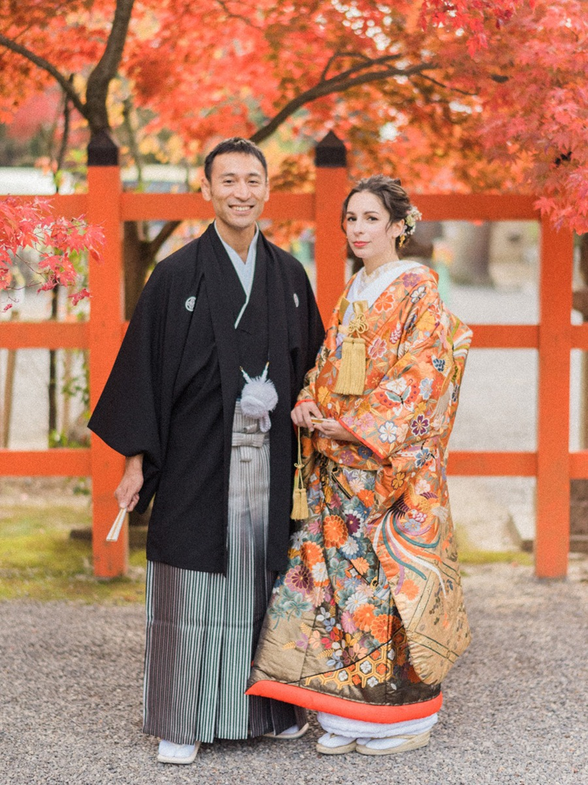
1. Wedding
Both the bride and groom fashion a wedding kimono at a traditional Shinto wedding. At more westernised weddings, which are becoming increasingly popular in Japan, the bride will wear a western wedding dress during the ceremony and change into a bridal kimono for the party. All bridal kimonos are elaborate and tend to have no expenses spared.
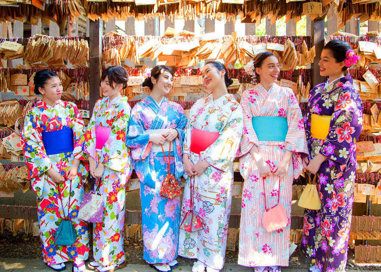
2. Guest at a Wedding
Kimonos are also often worn by weddings guests to a Japanese wedding. Whether the wedding is in traditional Japanese style or westernised, a kimono is still acceptable and appropriate to wear. Being a guest at a wedding is thought of as a great way to meet potential partners, and so it is common for young unmarried women to wear a brightly coloured kimono to attract a potential suitor. For married and older guests, it is more common to wear a darker and more simple kimono.
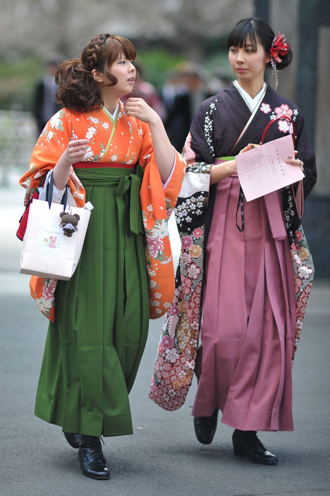
3. Graduation
This is often paired with a Hakama, which is a skirt that is either divided or undivided. A hakama resembles a wide pair of trousers, and women often wear one with their kimono to a graduation ceremony. A hakama possesses a scholarly image due to professors and lecturers traditionally wearing them.
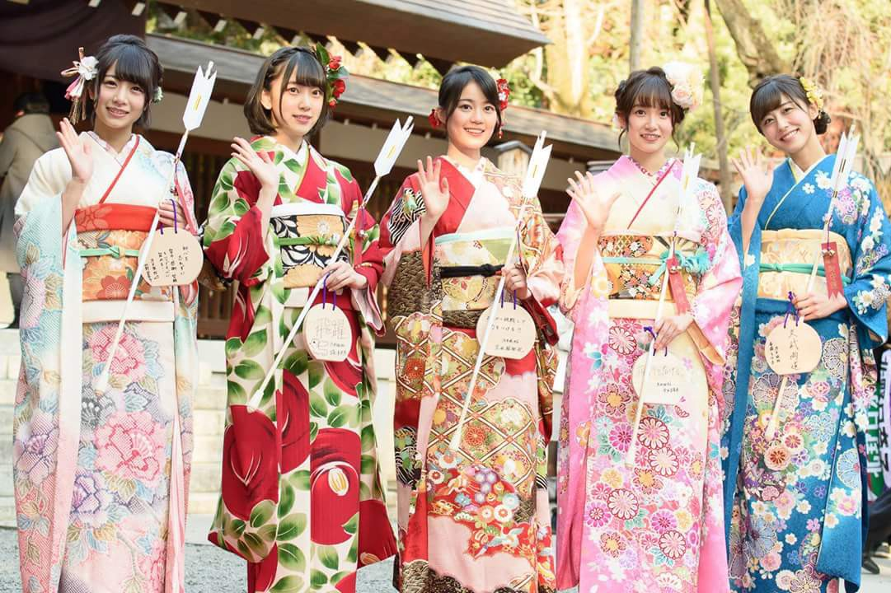
4. Coming Of Age Ceremony
Coming of Age ceremonies (Seijin-Shiki) are held on every second Monday of January. This ceremony welcomes young adults to adulthood who turned 20 between April 2nd of the year before, and April 1st of the current year. Kimonos can typically be seen Japan on this day. For this occasion, girls tend to wear furisode, which are kimonos with long-flowing sleeves. Boys tend to wear haori, which are half coats, and then a hakama decorated with their family crest.

5. Summer Festival
Japan is famous for its array of festivals in the summer. From small to large, people love to apprcciate the Japanese summer at special events with the people they love. Most young women tend to wear a summer kimono, known as a yukata, to these festivals. Yukata are a more informal kimono, and are ideal for summer due to the lightweight material helping the wearer to maintain a cool temperature. The wide sleeves are also great for keeping cool, whilst providing a chic and summery look for those summer festivals.
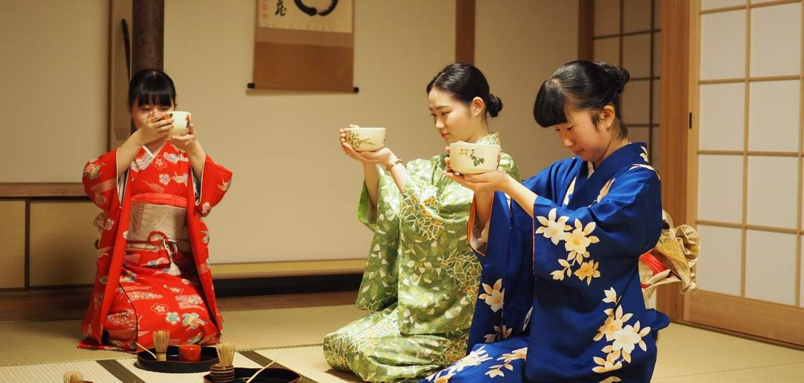
6. Participating Tea Ceremony
The Japanese Tea Ceremony is a cultural ceremony in Japan that is popular with its residents. The activity involves perfecting the art of preparing, serving, and appreciating tea. All individuals participating in the ceremony must wear a kimono. The tea ceremony actually evolved during a time where the kimono was worn daily by all men and women. Because of this, many of the movements involved in making tea are actually accounted for in the design of the kimono.